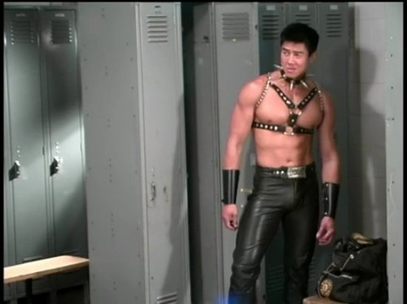
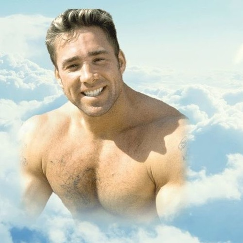
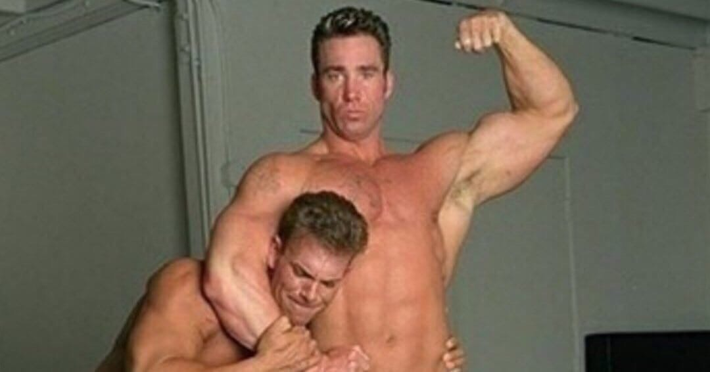

Фраза "Fuck you"
Фраза про твердий член
Невідомий бій
Рікардо Мілос
Gachimuchi (Японською "Накачаний здровань")

Ван Даркголм

Біллі Геррінґтон(Загинув)
У березні 2018 року Геррінґтон загинув в автоаварії в Каліфорнії. Після смерті він фактично став головною особою субкультури.

Бій між Біллі Геррінґтоном і невідомим мужчиною
Легенда